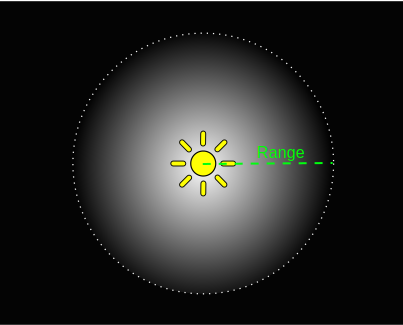
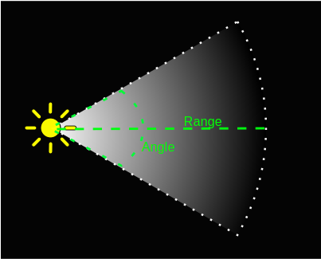

Types of light
This section details the many different ways of creating light in Unity.
Point lights
A point light is located at a point in space and sends light out in all directions equally. The direction of light hitting a surface is the line from the point of contact back to the center of the light object. The intensity diminishes with distance from the light, reaching zero at a specified range. Light intensity is inversely proportional to the square of the distance from the source. This is known as ‘inverse square law’ and is similar to how light behaves in the real world.

Point lights are useful for simulating lamps and other local sources of light in a scene. You can also use them to make a spark or explosion illuminate its surroundings in a convincing way.

Spot lights
Like a point light, a spot light has a specified location and range over which the light falls off. However, the spot light is constrained to an angle, resulting in a cone-shaped region of illumination. The center of the cone points in the forward (Z) direction of the light object. Light also diminishes at the edges of the spot light’s cone. Widening the angle increases the width of the cone and with it increases the size of this fade, known as the ‘penumbra’.

Spot lights are generally used for artificial light sources such as flashlights, car headlights and searchlights. With the direction controlled from a script or animation, a moving spot light will illuminate just a small area of the scene and create dramatic lighting effects.

Directional lights
Directional lights are very useful for creating effects such as sunlight in your scenes. Behaving in many ways like the sun, directional lights can be thought of as distant light sources which exist infinitely far away. A directional light does not have any identifiable source position and so the light object can be placed anywhere in the scene. All objects in the scene are illuminated as if the light is always from the same direction. The distance of the light from the target object is not defined and so the light does not diminish.

Directional lights represent large, distant sources that come from a position outside the range of the game world. In a realistic scene, they can be used to simulate the sun or moon. In an abstract game world, they can be a useful way to add convincing shading to objects without exactly specifying where the light is coming from.

By default, every new Unity scene contains a Directional Light. In Unity 5, this is linked to the procedural sky system defined in the Environment Lighting section of the Lighting Panel (Lighting>Scene>Skybox). You can change this behaviour by deleting the default Directional Light and creating a new light or simply by specifying a different GameObject from the ‘Sun’ parameter (Lighting>Scene>Sun). Rotating the default Directional Light (or ‘Sun’) causes the ‘Skybox’ to update. With the light angled to the side, parallel to the ground, sunset effects can be achieved. Additionally, pointing the light upwards causes the sky to turn black, as if it were nighttime. With the light angled from above, the sky will resemble daylight. If the Skybox is selected as the ambient source, Ambient Lighting will change in relation to these colors.
Area lights
An Area Light is defined by a rectangle in space. Light is emitted in all directions uniformly across their surface area, but only from one side of the rectangle. There is no manual control for the range of an Area Light, however intensity will diminish at inverse square of the distance as it travels away from the source. Since the lighting calculation is quite processor-intensive, area lights are not available at runtime and can only be baked into lightmaps.

Since an area light illuminates an object from several different directions at once, the shading tends to be more soft and subtle than the other light types. You might use it to create a realistic street light or a bank of lights close to the player. A small area light can simulate smaller sources of light (such as interior house lighting) but with a more realistic effect than a point light.

Emissive materials

Like area lights, emissive materials emit light across their surface area. They contribute to bounced light in your scene and associated properties such as color and intensity can be changed during gameplay. Whilst area lights are not supported by Precomputed Realtime GI, similar soft lighting effects in realtime are still possible using emissive materials.
‘Emission’ is a property of the Standard Shader which allows static objects in our scene to emit light. By default the value of ‘Emission’ is set to zero. This means no light will be emitted by objects assigned materials using the Standard Shader.
There is no range value for emissive materials but light emitted will again falloff at a quadratic rate. Emission will only be received by objects marked as ‘Static’ or “Lightmap Static’ from the Inspector. Similarly, emissive materials applied to non-static, or dynamic geometry such as characters will not contribute to scene lighting.
However, materials with an emission above zero will still appear to glow brightly on-screen even if they are not contributing to scene lighting. This effect can also be produced by selecting ‘None’ from the Standard Shader’s ‘Global Illumination’ Inspector property. Self-illuminating materials like these are a useful way to create effects such as neons or other visible light sources.
Emissive materials only directly affect static geometry in your scene. If you need dynamic, or non-static geometry - such as characters, to pick up light from emissive materials, Light Probes must be used.
Ambient light
Ambient light is light that is present all around the scene and doesn’t come from any specific source object. It can be an important contributor to the overall look and brightness of a scene.
Ambient light can be useful in a number of cases, depending upon your chosen art style. An example would be bright, cartoon-style rendering where dark shadows may be undesirable or where lighting is perhaps hand-painted into textures. Ambient light can also be useful if you need to increase the overall brightness of a scene without adjusting individual lights.
Ambient light settings can be found in the Lighting window.